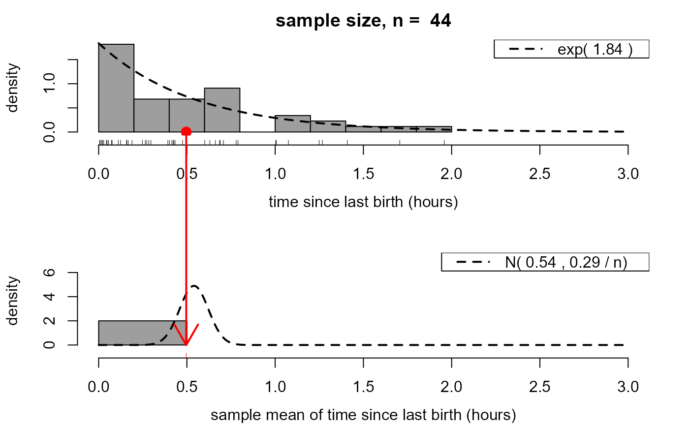
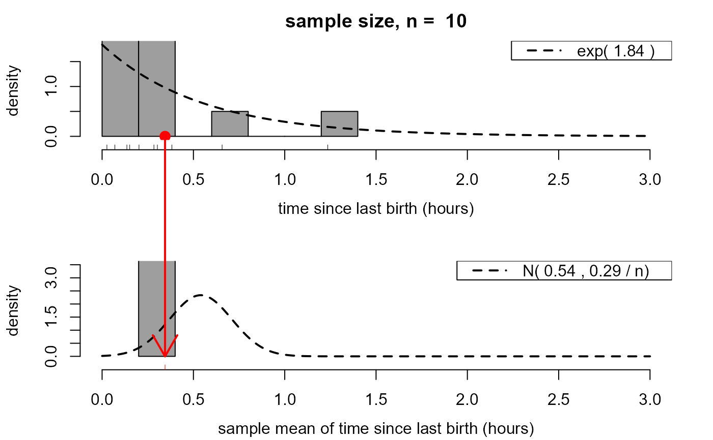

R/CLT_exponential_movie.R
clt_exponential_movie.RdA movie to illustrate the idea of a sampling distribution and the central limit theorem (CLT) in a situation where data are simulated randomly from an exponential distribution.
clt_exponential_movie(
n = 10,
lambda = 1,
xlab = "x",
pos = 1,
envir = as.environment(pos)
)An integer scalar. The size of the samples drawn from a normal distribution.
A numeric scalar. The rate parameter of the exponential
distribution from which data are to be simulated using rexp.
A character scalar. A name to use to label the horizontal axis of the plots.
A numeric integer. Used in calls to assign
to make information available across successive frames of a movie.
By default, uses the current environment.
An alternative way (to pos) of specifying the
environment. See environment.
Nothing is returned, only the animation is produced.
Loosely speaking, a consequence of the Central Limit Theorem (CLT) is that, in many situations, the mean of a large number of independent random variables has approximately a normal distribution, even if these original variables are not normally distributed.
This movie illustrates this in the case where the original variables
are exponentially distributed. Samples of size n are repeatedly
simulated from an exponential distribution. These samples are
summarized using a histogram that appears at the top of the movie screen.
For each sample the mean of these n values is calculated, stored
and added to another histogram plotted below the first histogram.
The (exponential) probability density function (p.d.f.) of the original
variables is superimposed on the top histogram. On the bottom histogram
is superimposed the approximate (large n) p.d.f. given by the
CLT.
The user may choose the sample size n, that is, the number of
values over which a mean is calculated, the rate parameter lambda
of the exponential normal distribution from which values are simulated
and the label xlab for the horizontal axis.
Once it starts, two aspects of this movie are controlled by the user. Firstly, there are buttons to increase (+) or decrease (-) the sample size, that is, the number of values over which a mean is calculated. Then there is a button labelled "simulate another sample of size n". Each time this button is clicked a new sample is simulated and its sample mean added to the bottom histogram.
Another movie (clt_normal_movie) considers the special case
where the original variables are normally distributed.
stat0002movies: general information about the movies.
clt_normal_movie: a similar movie using data
simulated from a normal distribution.
# Produce movie using values based on the Aussie births data
clt_exponential_movie(44, 1.84, "time since last birth (hours)")

# ... and with some smaller sample sizes
clt_exponential_movie(10, 1.84, "time since last birth (hours)")

clt_exponential_movie(3, 1.84, "time since last birth (hours)")